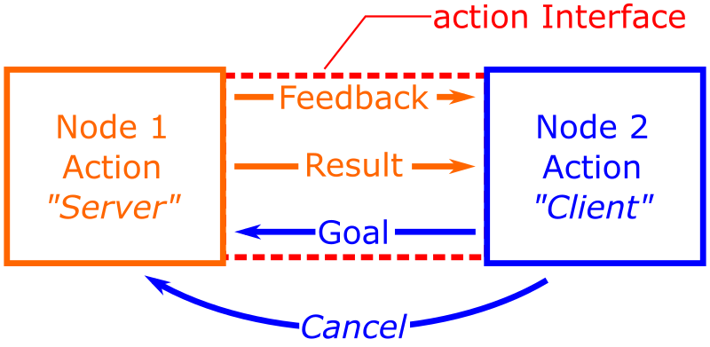

Lab 5: Actions
Introduction¶
In this part of the course we'll learn about a third method of communication available in ROS: Actions. Actions are essentially an advanced version of Services, and we'll look at exactly how these two differ and why you might choose to employ an action over a service for certain tasks.
Getting Started¶
Step 1: Launch your ROS 2 Environment
You should now have access to ROS 2 via a Linux terminal instance. We'll refer to this terminal instance as TERMINAL 1.
Step 2: Launch VS Code
It's also worth launching VS Code now, so that it's ready to go for when you need it later on.
Step 3: Make Sure The Course Repo is Up-To-Date
In Lab 1 you should have downloaded and installed The Course Repo into your ROS environment. If you haven't done this yet then go back and do it now. If you have already done it, then it's worth just making sure it's all up-to-date, so run the following command in TERMINAL 1 now to do so:
Then build with Colcon:
And finally, re-source your environment:
Warning
If you have any other terminal instances open, then you'll need run source ~/.bashrc in these too, in order for any changes made by the Colcon build process to propagate through to these as well.
Calling an Action Server¶
Before we talk about what actions actually are, we're going to dive straight in and see one in action (excuse the pun).
Exercise 1: Launching an Action Server and calling it from the command-line¶
We'll play a little game here. We're going to launch our TurtleBot3 Waffle in a mystery environment now, and we're going to do this by launching Gazebo headless i.e. Gazebo will be running behind the scenes, but there'll be no Graphical User Interface (GUI) to show us what the environment actually looks like. Then, we'll use an action server to make our robot scan the environment and take pictures for us, to reveal its surroundings!
-
To launch the TurtleBot3 Waffle in this mystery environment, use the following
ros2 launchcommand in TERMINAL 1:... nothing will appear to happen (for now!)
-
Next, open up a new terminal (TERMINAL 2), and have a look at all the topics that are currently active on the ROS network (you should know exactly how to do this by now!)
The output of this should confirm that ROS and our robot are indeed active...
How?
When the robot is active, the output of the
ros2 topic listcommand should provide a long list of topics, a number of which we've been working with throughout this course so far, such ascmd_vel,odom,scan, and so on. If the Waffle simulation isn't active then we would be presented with a much smaller list, containing only the core ROS topics:
TERMINAL 2:
-
Next (still in TERMINAL 2), run the following command to launch an Action Server on the network:
-
Now, open up another new terminal instance (TERMINAL 3), but so that you can view this and TERMINAL 2 side-by-side. Enter the following command to list all actions that are active on the ROS network:
There should be an item here called
/camera_sweep, use theinfocommand to find out more about this:This tells us the name of the action:
Action: /camera_sweep, as well as the number of client and server nodes this action has. Currently, the action should have 0 clients and 1 server, and the node acting as the server here should be listed as/camera_sweep_action_server_node(the node that we just launched with theros2 runcommand in TERMINAL 2).Finally, call the
ros2 action infocommand again, but this time providing an additional argument:Action: /camera_sweep Action clients: 0 Action servers: 1 /camera_sweep_action_server [interfaces/action/CameraSweep]The
-targument additionally shows the action type against the server node, indicating to us the type of interface used by the server. -
Let's now find out more about the interface itself. As with any interface (message, service or action) we can use the
ros2 interfacecommand to do this. In TERMINAL 3 enter the following:Which should present us with the following:
#goal float32 sweep_angle # Angular sweep (in degrees) over which to capture images int32 image_count # Number of images to capture during the sweep --- #result string[] image_paths # Full path to each of the captured images --- #feedback int32 current_image # Number of images taken float32 current_angle # Current angular position of the robot (in degrees)There are three parts to an action interface, and we'll talk about these in a bit more detail later on, but for now, all we need to know is that in order to call an action, we need to send the action server a Goal.
Comparing with ROS Services
This is a bit like sending a Request to a ROS Service Server, like we did in the previous session.
-
We can issue a goal to an action server from the command-line using the
ros2 actioncommand again. Let's give this a go in TERMINAL 3.First, let's identify the right
ros2 actionsub-command:Commands: info Print information about an action list Output a list of action names send_goal Send an action goalAs above, there are three sub-commands to choose from, and we've already used the first two! Clearly, the
send_goalcommand is the one we want now.Let's get some help on this one:
From this, we learn that there are three positional arguments, which must be supplied in the correct order:
We know from our earlier interrogation with the
ros2 action list,infoandros2 interface showcommands how to provide the right data here:action_name:/camera_sweepaction_type:interfaces/action/CameraSweepgoal: a data packet (in YAML format) containing two parameters:sweep_angle: the angle (in degrees) that the robot will rotate on the spot (i.e. 'sweep')image_count: the number of images it will capture from its front-facing camera while 'sweeping'
-
Now, again in TERMINAL 3, have a go at using the
ros2 action send_goalcommand, but keep an eye on TERMINAL 2 as you do this:ros2 action send_goal /camera_sweep interfaces/action/CameraSweep \ "{sweep_angle: 0, image_count: 0}"Having called the action, you should then be presented with a message (in TERMINAL 3) that the
Goal was rejected.In TERMINAL 2 (where the action server is running), we should see some additional information about why this was the case. Read this, and then head back to TERMINAL 3 and have another go at sending a goal to the action server, by supplying valid inputs this time!Once valid goal parameters have been supplied, the action server (in TERMINAL 2), will respond to inform you of what it's going to do. You'll then need to wait for it to do its job...
-
Once the action has completed (it could up to 20 seconds), a message should appear in TERMINAL 3 to inform us of the outcome:
Result: image_paths: - ~/ros_action_examples/img01.jpg - ~/ros_action_examples/img02.jpg - ~/ros_action_examples/img03.jpg - ... Goal finished with status: SUCCEEDEDAdditionally, we should see some further text in TERMINAL 2 as well:
[INFO] [#####] [camera_sweep_action_server_node]: camera_sweep_action_server_node completed successfully: - Angular sweep = # degrees - Images captured = # - Time taken = # seconds-
The result of the action (presented to us in TERMINAL 3) is a series file paths, illustrating the images that have been captured, and where they have been saved on the filesystem. Navigate to this directory in TERMINAL 3 (using
cd) and have a look at the content usingll(a handy alias for thelscommand):You should see the same number of image files in there as was requested with the
image_countparameter. -
Launch
eogin this directory and click through all the images to reveal your robot's mystery environment:
-
-
Let's do this one more time. Close down the
eogwindow, head back to TERMINAL 3 and issue theros2 action send_goalcommand again, but this time use the optional-fflag:ros2 action send_goal -f /camera_sweep interfaces/action/CameraSweep \ "{sweep_angle: 0, image_count: 0}"Tip
Don't forget to supply valid goal parameters again!
Now, as well as being provided with a result once the action has completed, we're also provided with some regular updates while the action is in progress (aka "feedback")!
-
To finish off, close down the action server in TERMINAL 2 and the headless Gazebo process in TERMINAL 1 by entering Ctrl+C in each terminal.
What is a ROS Action?¶
In the above exercise we launched an action server and then called it from the command-line using the ros2 action send_goal sub-command. In the same way as a ROS Service, the action also provided us with a result once the task had been completed.
Using the -f flag we were able to ask the server to provide us with real-time feedback on how it was getting on (in TERMINAL 3). Feedback is one of the key features that differentiates a ROS Action from a ROS Service: An Action Server provides feedback at regular intervals whilst working towards its goal. Another feature of ROS Actions is that they can be cancelled part-way through (which we'll play around with shortly).

Ultimately, Actions use a combination of both Topic- and Service-based communication, to create a more advanced messaging protocol. Building on ROS Services, Actions are designed to be used for longer running tasks, due to the provision of feedback and the ability to cancel a process part-way through. You can read more about Actions in the official ROS 2 documentation here (which also includes a nice animation to explain how they work).
The Format of Action Interfaces¶
Like Services, Action Interfaces have multiple parts to them, and we need to know what format these action messages take in order to be able to use them.
We ran ros2 interface show in the previous exercise, to interrogate the action interface used by the /camera_sweep action server:
As we know from Exercise 1, in order to call this action server we need to send a goal, and (in this case) there are two goal parameters that must be provided:
sweep_angle: a 32-bit floating-point valueimage_count: a 32-bit integer
Questions
- What are the names of the result and feedback interface parameters? (There are three in total.)
- What data types do these parameters use?
You'll learn how we use this information to develop Python Action Server & Client nodes in the following exercises.
Creating Python Action Clients¶
In the previous exercise we called a pre-existing Action Server from the command-line, by sending a goal to it. Let's look at how we can do this from within a Python ROS node now.
Exercise 2: Building a Python Action Client Node¶
-
In TERMINAL 1 launch the mystery world simulation again, but this time with an additional argument:
With the
with_guiswitch set totrue, we should now be able to actually see the simulated world this time.
(Not really that exciting is it!?) -
Then, in TERMINAL 2, launch the Camera Sweep Action Server again:
Part 1: A Minimal Action Client¶
-
Now, in TERMINAL 3, create a new package called
part5_actionsusing the approach that we've been using to create packages throughout this course. -
Navigate into the
scriptsfolder of your package using thecdcommand: -
In here, create a new Python file called
camera_sweep_action_client.py(using thetouchcommand) and make it executable (usingchmod). -
Then, declare this as an executable in the package's
CMakeLists.txt: -
At an absolute minimum, the Action Client can be constructed as follows:
The camera_sweep_action_client.pyNode -
Let's build the Node now, so that we can run it. Head back to TERMINAL 3 and use Colcon to build the package:
-
Re-source the
.bashrc: -
Run your node with
ros2 run:With the command above as it is, the server will reject the goal (check back in TERMINAL 2 to find out why). How can you modify the above command (by adding some additional arguments), so that the
camera_sweep_action_client.pynode actually sends a valid goal?1 -
Having modified the
ros2 runcommand to successfully send a valid goal to thecamera_sweepaction server, the robot should start to turn, capturing images as it goes.The Client that we've created here makes a call to the action server and then exits, it doesn't even wait for the server to finish its task! The only way that we'd know if the action was successful, is if we were to keep an eye on TERMINAL 2, to see the action server respond to the goal that was sent to it... The client itself provides no feedback during the action, nor the result at the end. Let's look to incorporate that now...
Part 2: Handling a Result¶
-
Go back to the
camera_sweep_action_client.pyfile in VS Code. -
In order to be able to handle the result that is sent from an action server, we first need to handle the response that the server sends to the goal itself.
Within the
send_goal()method of theCameraSweepActionClient()class, find the line that reads:and change this to:
self.send_goal_future = self.actionclient.send_goal_async(goal) self.send_goal_future.add_done_callback(self.goal_response_callback)This method is no longer returning the future that is sent from
send_goal_async(), but is now handling this and adding a callback to it:goal_response_callback. This callback can now be used to inform the client of whether the server has accepted the goal or not. -
We therefore need to define this callback now. Define it as a new class method of the
CameraSweepActionClient()class (i.e. underneath thesend_goal()class method that has already been defined)...def goal_response_callback(self, future): goal_handle = future.result() if not goal_handle.accepted: self.get_logger().warn("The goal was rejected by the server.") return self.get_logger().info("The goal was accepted by the server.") self.get_result_future = goal_handle.get_result_async() self.get_result_future.add_done_callback(self.get_result_callback)The input to this method will be the future that is created by the
send_goal_async()call. We assign this to an attribute calledgoal_handlehere, and can then use this for two purposes:- To check if the goal that we sent was accepted by the server
- If it was accepted, then we can get the result (using
get_result_async()) and we can attach another callback to this to actually process that result:get_result_callback.
-
Now we need to define this callback too. Define
get_result_callbackas another new method of theCameraSweepActionClient()class (i.e. underneath thegoal_response_callback()class method that we have just defined)...def get_result_callback(self, future): result = future.result().result self.get_logger().info( f"The action has completed.\n" f"Result (Image Paths):\n " + "\n ".join(result.image_paths) ) rclpy.shutdown()The input to this class method is another future object which contains the actual result sent from the server. We assign this to
resultand use aget_logger().info()call to print this to the terminal when the action has finished.As we know from our work earlier, the
CameraSweepAction interface contains one Result parameter calledimage_paths. -
Finally, in the
to just this: (becausemainmethod, change this:send_goal()no longer returns afuture) -
And then also change:
to this:
-
Save all your changes!
-
Run this node again now (with the
ros2 runcommand) and observe the changes in action.Our client node now presents us with the result that is sent by the server on completion of the action, but wouldn't it be nice if we could see the real-time feedback as the action takes place? Let's add this in now...
Part 3: Handling Feedback¶
-
Go back to the
camera_sweep_action_client.pyfile in VS Code. -
In order to be able to handle the feedback that is sent from an action server, we need to add yet another callback! Go back to the
send_goal()method and the line where we are actually sending the goal to the server:As it stands, all we're doing here is sending the goal, but we can also add a feedback callback to this too:
self.send_goal_future = self.actionclient.send_goal_async( goal=goal, feedback_callback=self.feedback_callback )The
feedback_callbackwill be executed every time a new feedback message is received from the server. -
In order to define what we want to do with these feedback messages we need to add yet another new method to the
CameraSweepActionClient()class. Underneath theget_result_callback()class method that we defined earlier, add this new one as well:def feedback_callback(self, feedback_msg): feedback = feedback_msg.feedback fdbk_current_angle = feedback.current_angle fdbk_current_image = feedback.current_image self.get_logger().info( f"\nFEEDBACK:\n" f" - Current angular position = {fdbk_current_angle:.1f} degrees.\n" f" - Image(s) captured so far = {fdbk_current_image}." )As we know from our work earlier, the
CameraSweepinterface contains two feedback parameters:current_angleandcurrent_image. -
Save all your changes once again, run the node again with the
ros2 runcommand and observe the changes in action.The node we've now built can send a goal to an action server, process the feedback returned from the server as the action is in progress, and present the result to us once everything is complete.
As discussed earlier though, the other key feature of Actions is the ability to cancel them part-way through. So let's look at how to incorporate this now as well.
Part 4: Cancelling an Action¶
-
First, create a copy of your
camera_sweep_action_client.pynode and call itcancel_camera_sweep.py. Make sure TERMINAL 3 is located in thescriptsdirectory of yourpart5_actionspackage before running the following: -
Don't forget to declare this as an additional executable in the package's
CMakeLists.txt. You'll then also need to re-build the package withcolcon build(go back for a reminder). -
Open the
cancel_camera_sweep.pyfile in VS Code. -
We want this client to be able to cancel the goal under two different circumstances:
- The client itself is shutdown by the user (via a Ctrl+C in the terminal)
- A conditional event that happens as the action is underway.
In order to address item 1 first, we need to draw upon some of the work we did in Part 2 in the implementation of safe shutdown procedures...
-
As you hopefully recall, we first need to import
SignalHandlerOptionsinto our node, so add this as an additional import at the start of the code:Then, in the
main()node function, modify therclpy.init()call: -
Inside the
__init__()method of ourCameraSweepActionClient()class we now need to add some additional flags:In the
get_result_callback()class method, we can then ensure that theself.goal_succeededflag is set toTruewhen a result is received. In this class method, locate therclpy.shutdown()line and add the following additional line just above it: -
Actions can be cancelled using a
cancel_goal_async()method of thegoal_handlethat is obtained from thegoal_response_callback(). As such, we need to make this accessible across our entireCameraSweepActionClient()class. Locate thegoal_response_callback()class method, and add this line at the bottom as the last line of thegoal_response_callback()method:This makes
goal_handleaccessible across the entireCameraSweepActionClient()class asself.goal_handle. -
We can only attempt to cancel an Action when it's in progress, therefore the feedback callback is the best place to trigger this. Locate the
feedback_callback()class method and place the following at the end of it:if self.stop: future = self.goal_handle.cancel_goal_async() future.add_done_callback(self.cancel_goal)Here, we call the
cancel_goal_async()method fromself.goal_handle, and add another new callback (cancel_goal()) to it (i.e. to encapsulate what we want to happen when the action is cancelled). -
Now, let's define this as another new (and final!) class method:
def cancel_goal(self, future): cancel_response = future.result() if len(cancel_response.goals_canceling) > 0: self.get_logger().info('Goal successfully canceled') self.goal_cancelled = True else: self.get_logger().info('Goal failed to cancel')The input to this callback is another future, which we can use to determine if the goal has been cancelled (as shown above). If it has, then we set our
self.goal_cancelledflag toTrue. -
Finally, go back the
main()function of the node. We're going to replace therclpy.spin(action_client)line now, with arclpy.spin_once(), wrapped inside atry-except, wrapped inside awhileloop!while not action_client.goal_succeeded: try: rclpy.spin_once(action_client) if action_client.goal_cancelled: break except KeyboardInterrupt: print("Ctrl+C") action_client.stop = TrueThe
whileloop will execute until the action completes successfully, or until the goal is cancelled, or we shutdown the node with a Ctrl+C interrupt.Look back through the node to see how all this will flow through your class.
-
We may wish to cancel a goal conditionally if - say - too much time has elapsed since the call was made, or the caller has been made aware of something else that has happened in the meantime (perhaps we're running out of storage space on the robot and can't save any more images!).
For the purposes of this exercise, we want to modify our node so that the action is always cancelled after a total of 5 images have been captured. This can be done by making a fairly small modification to the
feedback_callback(). Have a go at implementing this now.- Have a go now at introducing a conditional call to the
cancel_goal()method once a total of 5 images have been captured. - You could use the
current_imageattribute from theCameraSweepFeedbackmessage to trigger this.
- Have a go now at introducing a conditional call to the
A Summary of ROS Actions¶
ROS Actions work a lot like ROS Services, but they have the following key differences:
- They can be cancelled: If something is taking too long, or if something else has happened, then an Action Client can cancel an Action whenever it needs to.
- They provide feedback: so that a client can monitor what is happening and act accordingly (i.e. cancel the action, if necessary).
This mechanism is therefore useful for operations that may take a long time to execute, and where intervention might be necessary.
Creating Your Own Action Servers, Clients and Interfaces¶
Important
Cancel all active processes that you may have running before moving on.
So far we have looked at how to call a pre-existing action server, but what about if we actually want to set up our own, and use our own custom Action Interfaces too?
To start with, have a look at the Action Server that you've been working with in the previous exercises. You've been launching this with the following command:
Questions
- Which package does the action server node belong to?
- Where (in that package directory) is this node likely to be located?
Once you've identified the name and the location of the source code, open it up in VS Code and have a look through it to see how it all works. Don't worry too much about all the content associated with obtaining and manipulating camera images in there, we'll learn more about this in the next part of this course. Instead, focus on the general overall structure of the code and the way that the action server is implemented.
Some things to review:
-
The way the server is initialised and the numerous callbacks that are attached to it:
self.actionserver = ActionServer( node=self, action_type=CameraSweep, action_name="camera_sweep", execute_callback=self.server_execution_callback, # (1)! callback_group=ReentrantCallbackGroup(), # (2)! goal_callback=self.goal_callback, # (3)! cancel_callback=self.cancel_callback # (4)! )- This callback contains all the code that will be executed by the server once a valid goal is sent to it (i.e. the core functionality of the Action)
- This server node is set up as a Multi-threaded Executor (see the setup in
main()), to control the execution of the various callbacks that we need. Here, we're assigning the Action Server to a Reentrant Callback Group, allowing all its callbacks to run in parallel, as well as other subscriber callbacks too. - This callback is used to check the goal parameters that have been sent to the server, to decide whether to accept or reject a request.
- This callback contains everything that needs to happen in the event that the Action is cancelled part-way through.
-
Take a look at the various Action callbacks to see what's happening in each:
- How are goal parameters checked, and subsequently accepted or rejected?
- How are cancellations implemented, and how is this monitored in the main
server_execution_callback()? - How is feedback handled and published?
- How is the result handled and published too?
-
Finally, consider the shutdown operations.
Implementing an "Exploration" strategy using the Action Framework¶
An exploration strategy allows a robot to autonomously navigate an unknown environment while simultaneously avoiding crashing into things! One way to achieve this is to utilise two distinct motion states: moving forwards and turning on the spot, and repeatedly switching between them. Brownian Motion and Levy Flight are examples of this kind of approach. Randomising the time spent in either, or both, of these two states will result in a navigation strategy that allows a robot to slowly and randomly explore an environment. Forward motion could be performed until - say - a certain distance has been travelled, a set time has elapsed or something gets in the way. Likewise, the direction, speed and/or duration of turning could also be randomised to achieve this.
Over the next few exercises we'll construct our own Action Interface, Server and Client nodes with the aim of creating the basis for a basic exploration behaviour. Having completed these exercises you'll have something that - with further development - could be turned into an exploration type behaviour such as the above.
Exercise 3: Creating an Action Interface¶
In Exercise 2 we created the part5_actions package. Inside this package we will now define an Action Interface to be used by the subsequent Action Server and Client that we will create in the later exercises.
-
Action interfaces must be defined within an
actionfolder at the root of the package directory, so let's create this now in TERMINAL 1:-
First, navigate into your package:
-
Then use
mkdirto make a new directory:
-
-
In here we'll now define an Action Interface called
ExploreForward: -
Open this up in VS Code and define the data structure of the Interface as follows:
ExploreForward.action#goal float32 fwd_velocity # The speed at which the robot should move forwards (m/s) float32 stopping_distance # Minimum distance of an approaching obstacle before the robot stops (meters) --- #result float32 total_distance_travelled # Total distance travelled during the action (meters) float32 closest_obstacle # LaserScan distance to the closest detected obstacle up ahead (meters) --- #feedback float32 current_distance_travelled # Distance travelled so far during the action (meters)This interface therefore has two goal parameters, one feedback parameter, and two result parameters:
Goal:
fwd_velocity: The speed (in m/s) at which the robot should move forwards when the action server is called.stopping_distance: The distance (in meters) at which the robot should stop ahead of any objects or boundary walls that are in front of it (this data will come fromLaserScandata from the robot's LiDAR sensor).
Feedback:
current_distance_travelled: The distance travelled (in meters) since the current action was initiated (based onOdometrydata).
Result:
total_distance_travelled: The total distance travelled (in meters) over the course of the action (based onOdometrydata).closest_obstacle: The distance to the closest obstacle up ahead of the robot when the action completes.
-
Now, declare this interface in the package's
CMakeLists.txtfile, so that the necessary Python code can be created: -
Also modify the
package.xmlfile (above the<export>line) to include the necessaryrosidldependencies: -
Now run
colconto generate the necessary source code for this new interface:-
First, always make sure you're in the root of the Workspace:
-
Then run
colcon build: -
And finally re-source the
.bashrc:
-
-
We can now verify that it worked.
-
Use
ros2 interfaceto list all available interface types, but use the-aoption to display only action-type interfaces:Look for a message with the prefix "
part5_actions". -
Next, show the data structure of the interface:
This should match the content of the
part5_actions/action/ExploreForward.actionfile that we created above.
-
Exercise 4: Building the "ExploreForward" Action Server¶
-
In TERMINAL 1 navigate to the
scriptsfolder of yourpart5_actionspackage, then:- Create a Python script called
explore_server.py - Make it executable
- Declare it as an executable in
CMakeLists.txt
- Create a Python script called
-
Open up the file in VS Code.
-
The job of the Server node is as follows:
- The action server should make the robot move forwards until it detects an obstacle up ahead.
- It should use the
ExploreForward.actionInterface that we created in the previous exercise. -
The Server will therefore need to be configured to accept two goal parameters:
- The speed (in m/s) at which the robot should move forwards when the action server is called.
-
The distance (in meters) at which the robot should stop ahead of any objects or boundary walls that are in front of it.
To do this you'll need to subscribe to the
/scantopic. Be aware that an object won't necessarily be directly in front of the robot, so you may need to monitor a range ofLaserScandata points (within therangesarray) to make the collision avoidance effective (recall the LaserScan callback example from Part 3).
-
Be sure to do some error checking on the goal parameters to ensure that a valid request is made. This is done by attaching a
goal_callbackto the Action Server.fwd_velocity: Should be a velocity that is moderate, and within the robot's velocity limits.stopping_distance: Should be greater than the minimum detectable limit of the LiDAR Sensor, large enough to safely avoid collisions.
-
Whilst your server performs its task it should provide the following feedback to a Client:
-
The distance travelled (in meters) since the current action was initiated.
To do this you'll need to subscribe to the
/odomtopic. Remember the work that you did in Part 2 on this.Tips
- The robot's orientation shouldn't change over the course of a single action call, only its
linear.xandlinear.ypositions should vary. - Bear in mind however that the robot won't necessarily be moving along the
XorYaxis, so you will need to consider the total distance travelled in theX-Yplane. - We did this in the Part 2
move_squareexercise, so refer to this if you need a reminder.
- The robot's orientation shouldn't change over the course of a single action call, only its
-
-
Finally, on completion of the action, your server should be configured to provide the following two result parameters:
- The total distance travelled (in meters) over the course of the action.
- The distance to the obstacle that made the robot stop (if the action server has done its job properly, then this should be very similar to the
stopping_distancethat was provided by the Action Client in the goal).
-
There's some template code to help you with this:
The explore_server.pyTemplateYou might also want to take a look at the
camera_sweep_action_server.pycode from the earlier exercises to help you construct this: a lot of the techniques used here will be similar (excluding all the camera related stuff).
Testing
When you want to test things out, why not use the Nav World environment from Part 3 (in TERMINAL 1):

Don't forget that in order to launch the server you'll need to have built everything with colcon by following the usual three stage process.
Do this in TERMINAL 2, and you'll then be able to run it:
Also, don't forget that you don't need to have developed a Python Client Node in order to test the server. Use the ros2 action send_goal CLI tool to make calls to the server (like we did in Exercise 1).
Exercise 5: Building a Basic "ExploreForward" Client¶
-
In TERMINAL 3 navigate to the
scriptsfolder of yourpart5_actionspackage, create a Python script calledexplore_client.py, make it executable, and add this to yourCMakeLists.txt. -
Run
colcon buildon it now, so you don't have to worry about it later (again, following the three stage process as above)...Here it is again, for good measure:
-
Step 1:
-
Step 2:
-
Step 3:
-
-
Open up the
explore_client.pyfile in VS Code. -
The job of the Action Client is as follows:
- The client needs to issue a correctly formatted goal to the server.
- The client should be programmed to monitor the feedback data from the Server. If it detects (from the feedback) that the robot has travelled a distance greater than 2 meters without detecting an obstacle, then it should cancel the current action call.
-
Use the techniques that we used in the Client node from Exercise 2 as a guide to help you with this.
-
Once you have everything in place, launch the action client with
ros2 runas below:If all is good, then this client node should call the action server, which will (in turn) make the robot move forwards until it gets a certain distance away from an obstacle up ahead (
stopping_distance), at which point the robot will stop, and your client node should then stop too. Once this happens, reorient your robot (using theteleop_keyboardnode) and launch the client node again to make sure that it is robustly stopping in front of obstacles repeatedly, and when approaching them from a range of different angles.Important
Make sure that your cancellation functionality works correctly too, ensuring that:
- The robot never moves any further than 2 meters during a given action call
- An action is aborted mid-way through if the client node is shut down with Ctrl+C
Exercise 6 (Advanced): Implementing an Exploration Strategy¶
Up to now, your Action Client node should have the capability to call the ExploreForward.action server to make the robot move forwards by 2 meters, or until it reaches an obstacle (whichever occurs first), but you could build on this now and turn it into a full exploration behaviour:
- Between action calls, your client node could make the robot turn on the spot to face a different direction and then issue a further action call to make the robot move forwards once again.
- The turning process could be done at random (ideally), or by a fixed amount every time.
- By programming your client node to repeat this process over and over again, the robot would (somewhat randomly) travel around its environment safely, stopping before it crashes into any obstacles and reorienting itself every time it stops moving forwards.
Submission on Google Classroom¶
To complete Lab 5, you must finish the final exploration challenge and upload your package.
Final Challenge: The Exploration Node¶
Using the action server and client concepts you've learned, implement the exploration strategy discussed above.
- The Goal: Create a new node (e.g.,
explore_action_client.py) that uses the Action framework to make the robot autonomously navigate and explore the mystery environment without colliding with obstacles. - The Logic:
- Call the appropriate action server to move the robot.
- Utilize feedback to monitor the robot's state.
- Implement logic to cancel the current goal and issue a new one (e.g., turning) if an obstacle is detected or a certain amount of time has elapsed.
Preparation for Upload¶
Ensure your part5_actions package is correctly compiled, free of build errors, and all Python scripts have executable permissions.
- Clean your workspace:
- Compress your package:
Submission Checklist¶
Your part5_submission.zip must contain:
scripts/:camera_sweep_action_client.py(From Exercise 2).cancel_camera_sweep.py(The cancellation-capable version).explore_action_client.py(The Final Challenge).
package.xml: Must include all necessary dependencies (e.g.,rclpy,interfaces,action_msgs).CMakeLists.txt: Correctly configured with all Python scripts listed under theinstall(PROGRAMS ...)block.
Upload your part5_submission.zip to the "Lab 5: Actions" assignment on Google Classroom.
-
You need to explicitly set the
goal_imagesandgoal_angleparameters at runtime, much like we did here with thenumber_game_client.pyservice client. ↩